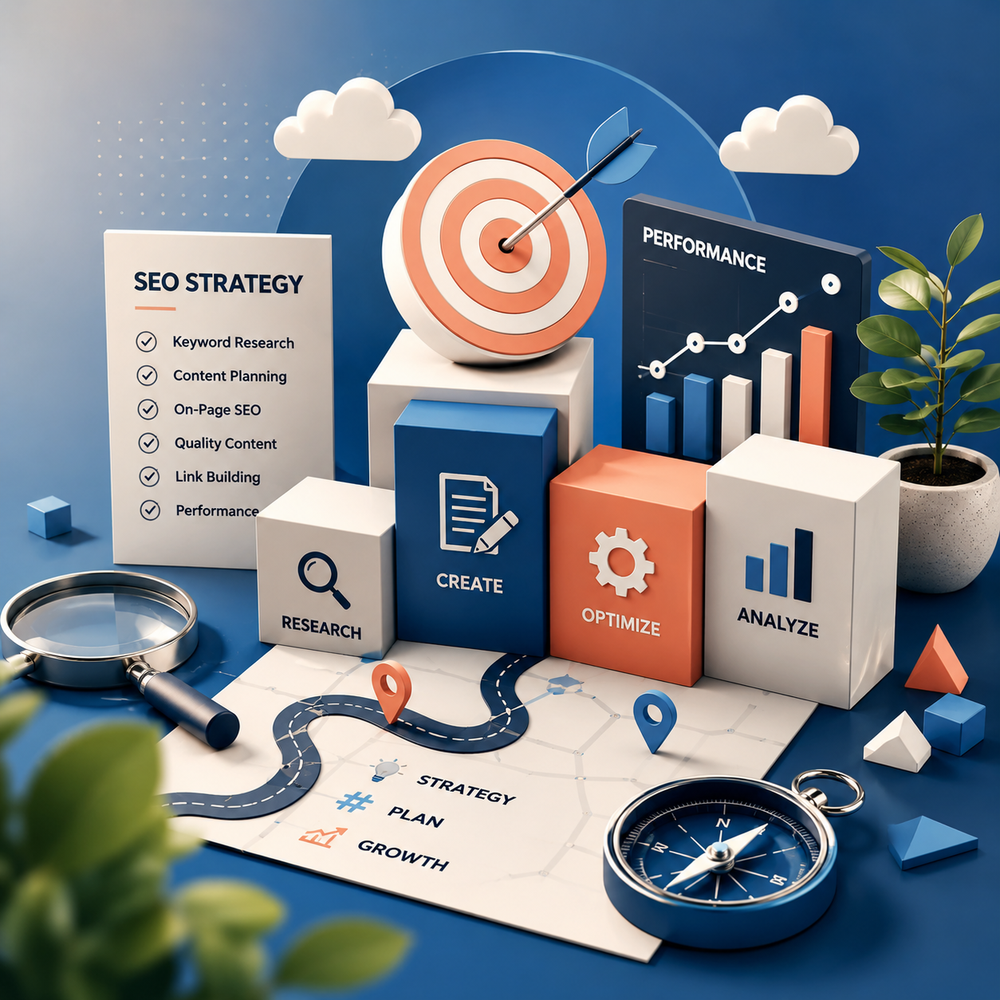

SEO content used to be associated with repeated keywords, rigid formulas and writing designed mainly for search engines. Modern search does not reward that approach consistently. Pages perform when they satisfy a real need, communicate clearly and make the topic easier to understand.
Search optimization still matters. Titles, headings, internal links, topical relevance and keyword use all influence discoverability. The difference is that these elements should support the reader instead of interrupting the experience.
What effective SEO content actually does
Effective SEO content connects a specific search query with a useful, trustworthy answer. It helps the right person find the page and gives that person a reason to stay.
Strong content usually achieves several goals at once:
- Matches the reader’s actual search intent.
- Explains the subject clearly and completely.
- Uses relevant terminology without forced repetition.
- Creates a logical path from question to answer.
- Supports a meaningful business or conversion goal.
- Builds enough trust for the reader to continue exploring.

Start with search intent, not the keyword alone
A keyword tells you what someone typed. Search intent tells you what that person expects to find. The distinction determines the entire direction of the article.
Informational intent
The reader wants to learn, compare or solve a problem. The page should explain the topic directly and provide useful depth.
Commercial investigation
The reader is evaluating options. Comparisons, use cases, benefits, limitations and decision criteria become important.
Transactional intent
The reader is ready to act. Clear service information, product value, trust signals and focused calls to action matter more than a long general introduction.
Navigational intent
The reader is searching for a particular brand, page or resource. The content should make that destination easy to identify.
Before drafting, review the current search results and ask: What type of answer is Google consistently presenting for this query? That pattern reveals the likely intent.
Keywords create visibility. Search intent creates relevance. Useful content needs both.
Use keywords naturally and strategically
Keywords should clarify the subject of the page. They should not make the writing feel unnatural. Repetition is not a substitute for topical depth.
Place the primary topic where it helps both search engines and readers understand the page:
- The page title and main heading.
- The introduction when it fits naturally.
- One or more relevant subheadings.
- The body where the topic genuinely requires it.
- Image alternative text when the image supports the topic.
- The meta description as a clear summary.
Use related concepts and natural variations throughout the text. A comprehensive article about SEO content may also discuss search intent, readability, internal linking, topical authority, metadata and conversion goals.
Structure the page for people who scan before they read
Online readers rarely begin by reading every sentence. They scan the headline, subheadings, opening paragraphs and visual cues to decide whether the page is relevant.
Write a direct introduction
Confirm the topic immediately. Explain what the reader will learn and why it matters without delaying the answer.
Use descriptive subheadings
Headings should communicate the content of each section. Generic labels make scanning more difficult and provide less topical context.
Keep paragraphs focused
Each paragraph should develop one clear idea. Shorter paragraphs improve readability, especially on mobile devices.
Answer the main question before expanding
Do not force the reader through several sections before providing the information promised by the title. Lead with value, then add explanation and context.
Build authority through useful detail
Search visibility is not only about technical optimization. Content also needs enough substance to demonstrate that the page deserves attention.
Authority grows when the writing:
- Explains important concepts accurately.
- Uses specific examples instead of vague claims.
- Acknowledges limitations and relevant conditions.
- Connects related ideas in a logical way.
- Uses credible sources when facts require support.
- Reflects practical knowledge rather than generic summaries.
Final SEO content quality checklist
Search intent
Does the page deliver the type of answer the reader expects?
Natural keyword use
Are keywords present where useful without repetitive phrasing?
Clear structure
Can readers understand the article by scanning its headings?
Useful depth
Does the page add practical detail beyond a generic summary?
Internal linking
Does the content guide readers toward relevant pages?
Business purpose
Is there a clear and appropriate next step for the reader?
SEO content performs best when optimization and communication support each other. A page should be easy to discover, but it should also feel useful, natural and worth remembering.